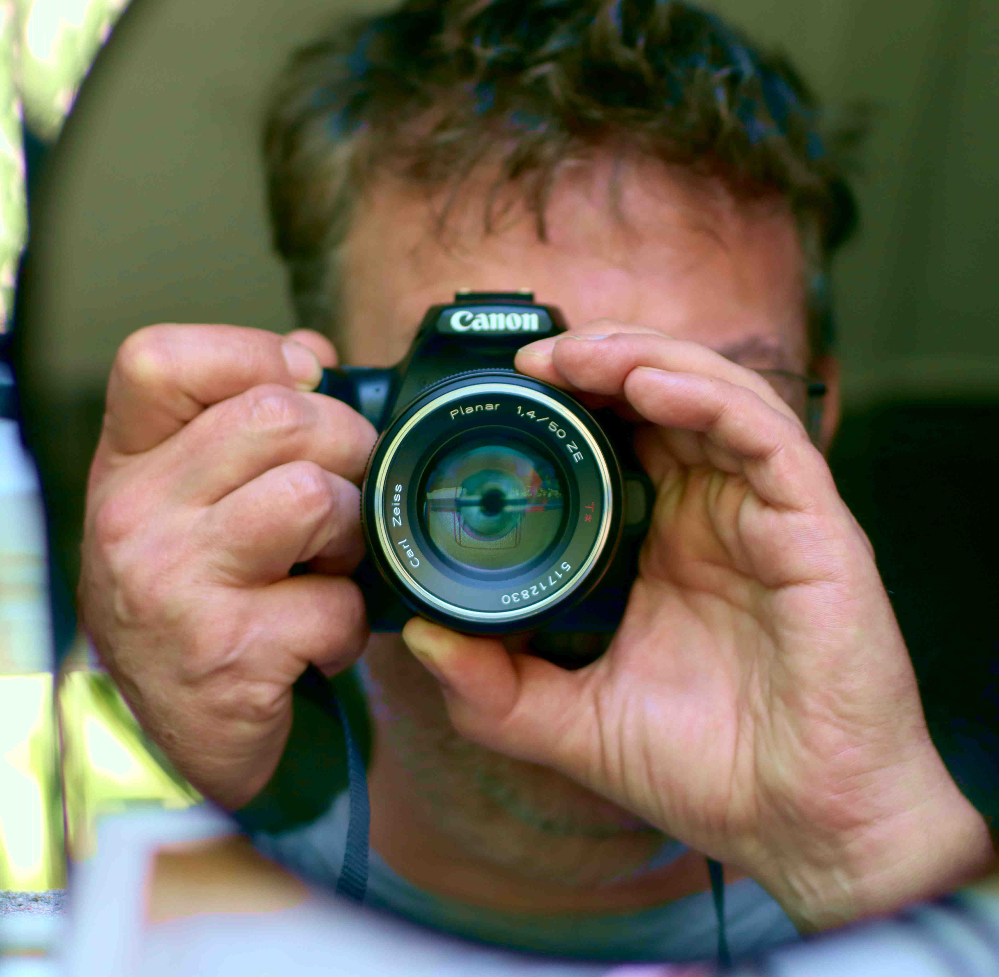

Stephen is a semi-professional photographer with a strong background in the creative industries. After years of working across design, branding, and creative projects, he fully embraced his passion for photography in recent years. Through his lens, he focuses on capturing authentic moments, striking compositions, and the unique stories that unfold in everyday life and special occasions.
Stephen specialises in capturing small events, live gigs, corporate functions, archival work, and estate agency photography. As a published local historian and author, he brings an unrivalled knowledge of Edinburgh’s streets, stories, and hidden corners. He is happy to scout distinctive filming locations — above ground and below — and with his strong knowledge of lenses he can work as a skilled cinematographer on small creative projects.